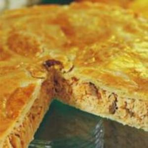

Cozinha Express
Delícias com Sal! Receitas salgadas para café da manhã, almoço, lanche e jantar.
Nossas Receitas

Lasanha Prática
Uma forma rápida e simples de fazer uma lasanha! O que você precisa:
- 1 pacote de massa para lasanha direto ao forno tradicional (200 g)
- 1 pacote (sachê) de molho de tomate bolonhesa (395 g)
- 200 g de mussarela fatiada
- 1 colher (sopa) de óleo
- 700 g de carne moída
- 1 caixa de creme de leite (200 g)
- 1 colher (café) de tempero alho e sal (caseiro)
- 1/3 de copo de água
Modo de Preparo:
- Em uma panela coloque 1 colher de óleo e o tempero.
- Doure o tempero, coloque a carne, refogue e deixe cozinhar.
- Quando a carne estiver cozida, adicione o pacote de molho pronto e 1/3 de copo de água, deixe ferver. Prove o sal.
- Quando ferver adicione o creme de leite e mexa.
- Deixe ferver até que fique um molho cremoso, mas não deixe secar, pois se faz necessário o molho pra cozinhar o macarrão.
- Em um pirex de 22 cm x 35 cm coloque ainda quente, uma camada fina de recheio, a massa uma ao lado da outra, deixando um pequeno espaço entre elas de 1/2 cm (conforme mostra na embalagem), outra camada de recheio e vá intercalando até terminar o recheio, não coloque o recheio muito grosso.
- A última camada deve ser de recheio, por cima cubra com as fatias de mussarela.
- Leve ao forno a 180ºC para assar por 15 minutos.
Receita obtida neste link.

Panqueca
Faça sua panqueca de uma maneira diferente! O que você precisa:
- 1 ovo
- 3 colheres (sopa) de leite
- 1 colher (sopa) de óleo de soja de farinha de trigo
- 2 ou 3 colheres de farinha de trigo
- 1 pitada de sal
Modo de Preparo:
- Em um recipiente bata os ovos.
- Acrescente o leite e o óleo e misture bem
- Adicione 2 colheres de farinha de trigo, ou 3 se preferir a amassa mais consistente.
- Acrescente uma pitada de sal e misture até a massa ficar homogênia.
- Esquente a frigideira ou panela (sem óleo) e quando ficar bem quente, despeje toda a massa na frigideira.
- Quando as bordas estiverem se soltando, vire a panqueca.
Receita obtida neste link.

Salpicao
Crie seu salpicao para os momentos perfeitos em família! O que você precisa:
- 800 gramas de peito de franfo desfiado
- 2 cenouras raladas
- 2 maçãs verdes cortadas em cubos
- 4 colheres de sopa de uvas passas preta
- 2 latas de milho Knorr
- 2 xícaras de chá de Maionese Hellmann's
- 1,5 xícara de chá de batata palha
Modo de Preparo:
- Em uma tigela, junte o peito de frango desfiado, a cenoura ralada, as maçãs picadas, o milho e a azeite.Misture bem.
- Acrescente a maionese Hellmann"s e misture tudo. Você pode diversificar e trocar a maionese tradicional por; maionese verde, chipottle sevocê gostar de uma receita mais apimentada ou de limão para dar aquele toque leve de acidez
- Leve para geladeira por 10 minutos.
- Sirva em copinhos individuais ou barquetes e finalize com batata palha por cima.
Receita obtida neste link.

Pastelão Prático
Decore sua mesa com este lindo pastelão! O que você precisa:
- 1 peito de frango (aproximadamente 500g).
- 1 cubo de caldo de galinha
- 6 colheres (sopa) de extrato de tomate
- 1 colher (sopa) de azeite de oliva
- 2 dentes de alho bem picados
- 1 cebola pequena picada
- 3 colheres (sopa) de requeijão ou queijo catupiry.
- 3 xícaras de farinha de trigo.
- 1 ovo.
- 200 gramas de margarina (forno e fogão) ou manteiga em temperatura ambiente.
- 1 colher de ovo para pincelar.
Modo de Preparo:
- Cozinhe o peito de frango na água com o cubo de galinha e 3 colheres de extrato de tomate.
- Quando o frango estiver cozido deixe esfriar e desfie.
- Em uma frigideira grande aqueça o azeite de oliva e adicione a cebola e o alho.
- Cozinhe até que fiquem levemente dourados e adicione frango desfiado.
- Adicione o restante do extrato de tomate e cozinhe por aproximadamente 2 minutos.
- Desligue o fogo e adicione o requeijão/queijo catupiry. Reserve.
- Misture todos os ingredientes (exceto a gema de ovo para pincelar) e sove por um minuto aproximadamente, até que os os ingredientes fiquem bem misturados. Se a massa estiver muito seca adicione 1 colher de leite.
- Divida a massa em dois, com uma metade um pouco maior que a outra.
- Pré aqueça o forno a 180°C.
- Em uma superfície enfarinhada coloque a metade maior da massa e abra com um rolo. A massa deve ficar grande o suficiente para cobrir o fundo e as bordas do refratário e ainda ficar 1 cm para fora (nós utilizamos uma forma quadrada de 23cmX23cm).
- Coloque o recheio por cima da massa e espalhe.
- Abra a outra metade da massa e coloque por cima do recheio.
- Aperte a junção das massas para selar.
- Pincele a massa com ovo.
- Asse por 30 a 40 minutos, ou até que a massa esteja dourada.
Receita obtida neste link.